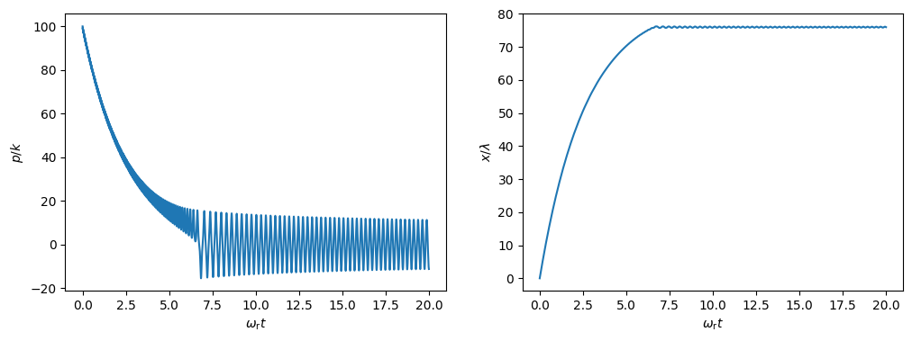
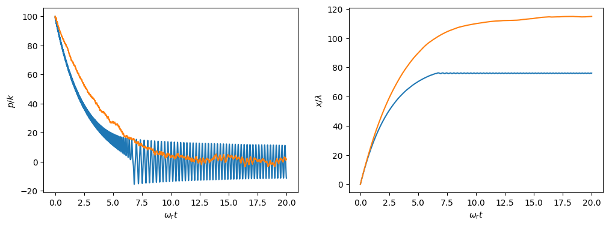
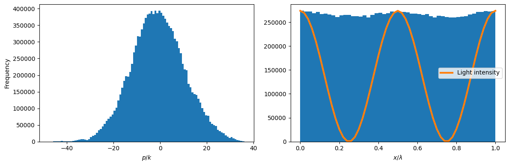

This notebook can be found on github
Doppler cooling
In this example, we will treat a simple model of Doppler cooling and show how the recoil an atom experiences when spontaneously emitting a photon limits the temperature.
To keep it simple, we will only consider one-dimensional, classical motion of a two-level atom coupled to a standing wave. The Hamiltonian of this system reads
$H = -\hbar\Delta\sigma^+\sigma^- + \hbar\Omega \cos(kx)\left(\sigma^+ + \sigma^-\right).$
Here, $\Delta = \omega_\ell - \omega_\mathrm{a}$ is the detuning between the standing wave of frequency $\omega_\ell$ and the atomic transition frequency $\omega_\mathrm{a}$. The standing wave has an amplitude $\Omega$. The spontaneous emission of the atom occurs at a rate $\gamma$ and is taken into account with
$\mathcal{L}[\rho] = \frac{\gamma}{2}\left(2\sigma^-\rho\sigma^+ - \sigma^+\sigma^-\rho - \rho\sigma^+\sigma^-\right).$
The classical equations of motion for the atomic positon $x$ and its momentum $p$ are given by
$\dot{x} = \frac{p}{m},$
$\dot{p} = 2k\Omega\sin(kx)\Re\left\{\langle \sigma^-\rangle\right\}.$
Finally, we need to include the recoil. This is done via a classical "jump" in a semi-classical MCWF approach. Namely, if we consider quantum mechanical states of motion, the state of an atom in the excited state with a momentum $p_0$ is
$|\psi\rangle = |e\rangle\otimes|p_0\rangle$.
Now, the collapse operator of a spontaneous emission event where the photon is emitted into the $x$-direction is $J = e^{ik\hat{x}}\sigma^-$, where $\hat{x}$ is the position operator. Such a jump maps to the atomic internal state to the ground state as well as providing a shift in momentum when applied.
Thus, the momentum expectation value changes when a jump occurs,
$p \equiv \langle\psi| \hat{p}|\psi \rangle = p_0 ~\to~ \langle\psi|J^\dagger \hat{p}J|\psi\rangle = \langle p | e^{-ikx}\hat{p}e^{ikx}|p \rangle = p_0 + \hbar k$.
In the last step, we used the relation $e^{-ikx}\hat{p}e^{ikx}= \hat{p} + \hbar k$ (the position operator is the generator of momentum translation), which can be shown using the canonical commutator $[\hat{x},\hat{p}]=i\hbar$ and the Baker-Campbell-Hausdorff formula.
As we can see, in order to treat the recoil, a Monte-Carlo jump from the excited to the ground state needs to affect the classical momentum variable as well. Let us stress here, that the above relation holds only for spontaneous emission in the $x$-direction. We will later see how the different directions are taken into account.
using QuantumOpticsusing PyPlotusing StatisticsAs usual, we start by defining the parameters we need.
# Parametersγ = 1.0Δ = -0.5γconst ωr = 5*1e-4*γ # Recoil frequencyconst k = 1.0const m = k^2/(2ωr)const λ = 2π/kconst Ω = 0.4γT = [0.0:10.0:40000.0;]We need to update the Hamiltonian dynamically according to the atomic position at time $t$. Therefore, we pre-define its parts only.
# Hilbert spaceb = SpinBasis(1//2)# Hamiltonianconst sm = sigmam(b)const H0 = -Δ*sm'*smconst Hint = Ω*(sm + sm') # ∝ cos(kx)# Jump operatorsconst J = [sqrt(γ)*sm]const Jdagger = dagger.(J)As in all other semiclassical solvers, we need to define two separate functions which update the quantum mechanical and classical part, respectivley.
# Dynamic functionsfunction fquantum(t,psi,u) H = H0 + Hint*cos(k*u[1]) return H, J, Jdaggerendfunction fclassical_master!(du,u,rho,t) du[1] = u[2]/m du[2] = 2Ω*k*sin(k*u[1])*real(expect(sm,rho)) return nothingendNeglecting recoil
In a first step, we can disregard the effects of recoil from spontaneous emission. Then, we can compute the time evolution of the atom in a master equation. We choose an initial state where the atom has a large momentum ($\sim 100 \hbar k$) in order to observe cooling.
# Initial stateu0 = ComplexF64[0.1,100.0]ψ0 = semiclassical.State(spindown(b),u0);# Without recoilt, ρt = semiclassical.master_dynamic(T,ψ0,fquantum,fclassical_master!)x_nr = real.([ψ.classical[1] for ψ=ρt])p_nr = real.([ψ.classical[2] for ψ=ρt])# Plotfigure(figsize=(12,4))subplot(121)plot(ωr .* t,p_nr./k)xlabel(L"\omega_\mathrm{r} t")ylabel(L"p/k");subplot(122)plot(ωr .* t,x_nr./λ)xlabel(L"\omega_\mathrm{r} t")ylabel(L"x/\lambda")
As we can see, the atom is cooled until it is trapped around a field-antinode. It then proceeds to oscillate back and forth in this trap.
Effects of recoil
In order to include the momentum kicks the atom experiences when spontaneously emitting a photon, we switch to using the MCWF method. To this end, we need to define a jump function which tells the solver how it should act on the classical part of the system whenever a jump with the jump operator J[i] occurs. In our case there is only one jump operator, and we need to modify the momentum which we store in u[2]. For simplicity, we assume that the atom is equally likely to emit a photon in all directions. The momentum kick in 3D is therefore a random vector normalized to the length k. Still we only consider 1D motion, which is why we only pick one component of this random vector and add it to the momentum whenever a jump occurs.
Note: We also need to define a new function updating the classical part, since it depends on an expectation value. Because of the way the MCWF method works, the quantum state psi is not normalized. We therefore need to renormalize when computing expectation values.
# Dynamic classical part -- note the normalization in the expectation valuefunction fclassical_mcwf!(du,u,psi,t) du[1] = u[2]/m du[2] = 2Ω*k*sin(k*u[1])*real(expect(sm,psi)/norm(psi)) return nothingend# Classical jump functionfunction fjump_classical!(u,psi,i,t) rand_vec = rand(3) .- 0.5 normalize!(rand_vec) u[2] += k*rand_vec[1] return nothingendFinally, we evolve the system in time. In order to compare the results to the previous ones obtained with the master equation, we need to average over many trajectories.
# Time evolutionNtraj = 25x = zeros(length(T))p = zeros(length(T))for i=1:Ntraj t, ψt = semiclassical.mcwf_dynamic(T,ψ0,fquantum,fclassical_mcwf!,fjump_classical!) x .+= real.([ψ.classical[1] for ψ=ψt])./Ntraj p .+= real.([ψ.classical[2] for ψ=ψt])./Ntrajend# Plotfigure(figsize=(12,4))subplot(121)plot(ωr.*t,p_nr./k)plot(ωr .*t,p./k)xlabel(L"\omega_\mathrm{r} t")ylabel(L"p/k");subplot(122)plot(ωr.*t,x_nr./λ)plot(ωr.*t,x./λ)xlabel(L"\omega_\mathrm{r} t")ylabel(L"x/\lambda")
We can still observe cooling when we include the recoil. However, the cooling is slower and less efficient. Furthermore, the atom is never trapped. This is because the potential walls created by the standing wave are rather low, such that the atom can pass over them if it receives a few momentum kicks.
Doppler temperature limit
It can be shown that Doppler cooling is fundamentally limited by recoil. The temperature $T_\mathrm{D}$ that can be reached is given by
$k_\mathrm{B} T_\mathrm{D} = \frac{\hbar\gamma}{2}.$
The temperature can in our case be computed from the momentum spread obtained from different MCWF trajectories. In order to speed up the computation we look at heating rather than cooling: starting with an atom with momentum $0$, it will be heated to the equilibrium temperature within a few recoil cycles. Then the cooling compensates the heating from the recoil.
We obtain the momentum statistics from the momentum distribution of the time evolution of only a few trajectories integrated for a very long time. The kinetic energy is then given by
$E_\mathrm{kin} = \frac{\langle p^2\rangle}{2m} = \frac{\Delta p^2 + \langle p \rangle^2}{2m},$
where $\Delta p$ is the width of the momentum distribution. In equilibrium the kinetic energy in one dimension should be equal to $E_\mathrm{kin}=k_\mathrm{B}T/2$.
Note, that the Doppler temperature is approached for low saturation only. We therefore reduce the amplitude of the standing wave and define the updated parts of our model as needed. Still, we cannot expect to reach this limit perfectly.
# ParametersNtraj = 20const Ω_D = 0.1γconst Hint_D = Ω_D*(sm + sm')# Define new functions with Ω_Dfunction fquantum_D(t,psi,u) H = H0 + Hint_D*cos(k*u[1]) return H, J, Jdaggerendfunction fclassical_D!(du,u,psi,t) du[1] = u[2]/m du[2] = 2Ω_D*k*sin(k*u[1])*real(expect(sm,psi)/norm(psi)) return nothingend# Longer integration timeT = [0.0:2.0:2000000.0;]Note that, due to the long integration time, we decrease the accuracy of the solver setting abstol and reltol. Still the following computation may take up to a few minutes.
# Initial state with 0 momentumu0_D = ComplexF64[0.0,0.0]ψ0_D = semiclassical.State(spindown(b),u0_D);# "Guess" after which time the atom is heated to T_Dt_index = div(length(T),3)T_ = [0.0;T[t_index:end]] #skip save-points before index# Time evolutionp_dist = Float64[]x_dist = Float64[]for i=1:Ntraj t, cl = semiclassical.mcwf_dynamic(T_,ψ0_D,fquantum_D,fclassical_D!,fjump_classical!;abstol=1e-4,reltol=1e-3, fout=(t,psi)->real.(psi.classical)); x_ = getindex.(cl,1) p_ = getindex.(cl,2) p_dist = vcat(p_dist,p_[2:end]) x_dist = vcat(x_dist,x_[2:end])end# Plot momentum distributionfigure(figsize=(12,4))subplot(121)h = hist(p_dist,100)xlabel(L"p/k")ylabel("Frequency")# Plot position distribution within one wavelengthsubplot(122)x_mod_λ = [mod(x_,λ)/λ for x_=x_dist]hx = hist(x_mod_λ,50)x_max = maximum(hx[1])plot(hx[2],x_max .* cos.(2π.*hx[2]).^2, lw=3, label="Light intensity")xlabel(L"x/\lambda")legend()tight_layout()
We can see that the momentum distribution is approximately symmetric around $0$. On the other hand, the position distribution (within one wavelength) is almost flat. This means, that the potential created by the standing wave does not suffice to trap the atom. It can be still seen that the atom tends to regions with large light intensities (high-field seeking).
As mentioned above, the kinetic energy can be computed from the width of the momentum distribution, and should be larger than (but close to) $\hbar\gamma/4$, which in the chosen units ($\hbar=1$, $\gamma = 1$) corresponds to a thermal energy of $k_B T_D = 0.5$. We compute the width of the distribution above as the FWHM.
# Compute FWHMind1,ind2 = sortperm(abs.(h[1].-0.5*maximum(h[1])))[1:2]p_fwhm = abs(h[2][ind2]) + abs(h[2][ind1])# Compute kinetic energy; should be >0.25E_kin = (p_fwhm^2+mean(p_dist)^2)/2mprint("kB⋅T = ", 2E_kin)kB⋅T = 0.8449022092282804As expected, we cannot reach the Doppler temperature perfectly, but close enough!